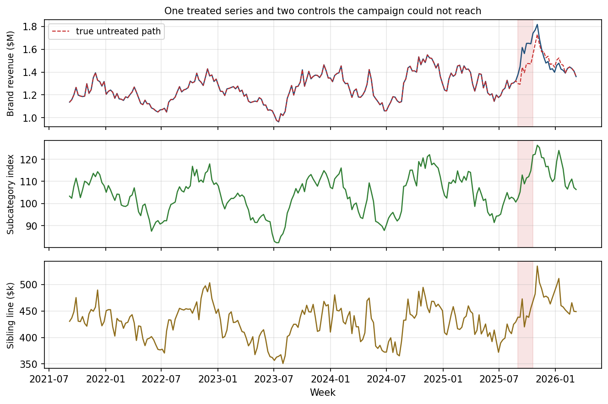
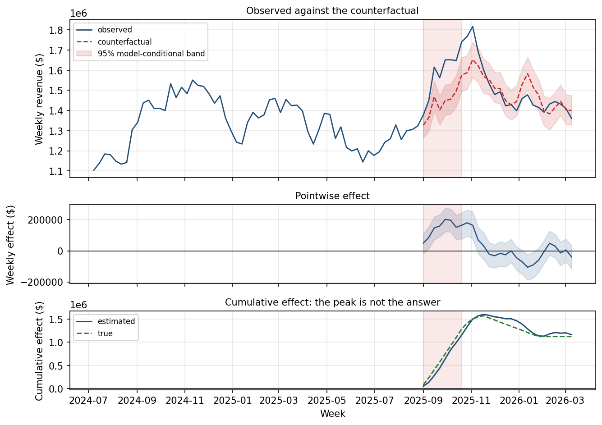
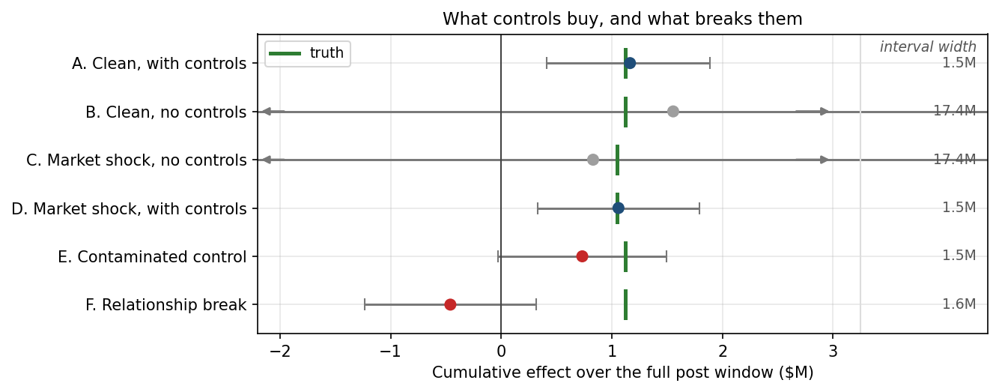

3.4 基于时间序列的因果影响分析
关于中文版
本页是英文版 Marketing Science in Python 的AI翻译。英文版为正式版本，如有出入，以英文版为准。代码、Notebook 和图片中的文字保持英文。 阅读英文版
上一章的每一种设计都有对照组。有些门店摆了陈列，有些没有。一个市场投放了活动，其他市场没有。本章要处理的，是完全没有对照组的情形。
一次全国性电视广告活动投放了 8 周。销售额上升了。但每个市场都接触到了活动，没有任何未处理的市场可以用来比较。如果没有这次活动，销售额会是多少？
本章只有一件事要做：构建那条缺失的“无活动”路径，并判断它是否可信到足以作为衡量活动效果的基准。构建只需要 15 行代码。判断它是否可信，占了本章余下的全部篇幅。
构建反事实
核心思想：预测没有活动时你本会看到的销售额。效果就是观测到的销售额减去这个预测值。
没有对照组，比较只能来自时间。用活动之前的销售额拟合一个时间序列模型，这样活动的影响就不可能渗入其中。把模型沿着活动窗口向前外推。这个外推值就是反事实，而它与实际发生情况之间的差距就是估计的效果。
预测仍然可以使用对照序列，但有必要说清楚：对照序列不是对照组。对照组是同类的未处理单位，比如没有摆陈列的门店。对照序列则是一个预测变量：任何活动不可能触及的序列，例如某个品类需求指数，或者一条没有投放媒体的同门产品线。它不与品牌本身作比较。它告诉预测模型，活动进行期间市场在发生什么。
最知名的实现是 CausalImpact，由 Google 以 R 包的形式发布，Brodersen 及其同事在 2015 年的一篇论文中做了描述。在因果推断文献中，同一种设计被称为中断时间序列。 Python 移植版也已存在（tfp-causalimpact，以及 CausalPy 中的 InterruptedTimeSeries）。本章用 statsmodels 直接搭建同样的逻辑，让每一个假设都保持可见。
这是上一章那架梯子的最后一级，下表展示了一路向上时发生了什么变化：
| 设计特征 | DiD | 合成控制 | CausalImpact |
|---|---|---|---|
| 需要的未处理单位 | 一个对照组 | 一个供体池 | 无；对照序列是预测变量，不是比较对象 |
| 比较来自于 | 对照组随时间的变化 | 供体池的加权组合 | 由该序列自身历史得到的预测 |
| 无法检验的假设 | 平行趋势 | 活动前期间的拟合关系持续成立 | 对照序列未受活动触及 |
实操示例是一个全国性快消品牌：四年的周度营收，一次为期 8 周的电视加公关活动，以及活动之后 20 周的观测。两条对照序列：一个子品类需求指数，以及一条没有投放任何媒体的同门产品线。数据是合成的，因此真实的无活动路径是已知的。在写任何代码之前，先看分析简报：
- 业务问题：这次活动带来了多少增量营收？
- 结果变量：全国周度营收。
- 处理：为期 8 周的电视加公关活动，作为一次合并干预来测量。
- 估计目标：上线后 28 周内的累计增量营收，包括延续效应以及之后的任何回吐。
最后一行是一个决定，而且是现在、在任何人看到数字之前就做出的。这就是下面的预测跑 28 周的原因，也是本章后面关于报告窗口的一节是一次核对而非一次选择的原因。

下面是构建反事实的代码：
import numpy as np
from statsmodels.tsa.statespace.structural import UnobservedComponents
# 1. Fit on the PRE-period only. The campaign is deliberately absent.
model = UnobservedComponents(
np.log(y_pre),
level="lltrend", # level and slope
freq_seasonal=[{"period": 52, "harmonics": 2}], # annual shape
exog=np.log(x_pre), # untouched controls
)
res = model.fit(disp=0)
# 2. Simulate 1,000 no-campaign paths across the 28 post-period weeks
horizon, draws = len(y_post), 1000
paths = np.exp(
np.asarray(res.simulate(horizon, repetitions=draws, anchor="end",
exog=np.log(x_post))).reshape(horizon, draws)
)
# 3. Effect = observed minus counterfactual. The point estimate and the
# interval come from the same draws, so both summarize one distribution.
counterfactual = paths.mean(axis=1)
weekly_effect = y_post - counterfactual
cumulative = weekly_effect.sum()
lo, hi = np.percentile((y_post[:, None] - paths).sum(axis=0), [2.5, 97.5])这段代码里有三个选择很重要。模型只在活动前期间上拟合，这样活动就不可能污染它自己的基线。销售额以对数建模，因为活动带来的提升和季节性都是乘性的，而模拟路径在求和之前会先换算回美元。对照序列作为回归变量进入模型，这样预测就知道活动期间市场发生了什么。模型是否还需要趋势项，或者到底需不需要对照序列，都不是口味问题。下一节用测量来定夺。
测量之前先验证反事实
这一步不是可选项。你将要报告的效果等于观测值减去预测值，所以每一美元的预测误差都会变成一美元的虚假效果。在用预测去测量活动之前，你必须证明它能预测一个什么都没发生的时期。三项检查可以做到这一点，而且三项都只在活动前期间上运行。
对预测做回测
模型能预测未处理的世界吗？假装活动在活动前期间内的某个更早日期开始。用该日期之前的数据拟合，预测接下来的 28 周，再与实际发生的情况比较。从几个不同日期重复这一过程。之所以是 28 周，是因为简报中的估计目标就是 28 周，而一个在 8 周上看起来不错的模型，到了 28 周可能会崩掉。
| 模型设定 | 预测误差 | 偏差 | 区间覆盖率 |
|---|---|---|---|
| 季节性朴素预测 | 7.96% | -5.83% | 不适用 |
| 水平项，无对照 | 5.54% | -1.32% | 99.6% |
| 水平项 + 对照 | 2.62% | -0.60% | 96.8% |
| 趋势项 + 对照 | 2.43% | +0.48% | 87.7% |
这张表做出了决定。趋势项加对照的误差最低、偏差最小，所以我们采用这个设定。一路上有两个细节值得注意。对照序列把误差减半，所以在这份数据上它们配得上自己的位置。而且在这个预测期长度下趋势项很重要：该品牌的增长快于其子品类，一个没有斜率的模型会把这段差距记到活动头上。
安慰剂干预
这种设计会不会在什么都没发生时凭空造出效果？在活动前期间里挑一个日期，比如第 120 周，当时并没有活动。假装那一周开始了一次活动，然后跑完整个分析。正确答案是零，所以无论返回什么，都是这种设计从噪声中生成的东西。这就是安慰剂干预，上面九个回测窗口同时也是九个安慰剂。这里最大的安慰剂效应是 $636k，九个当中有一个返回了不包含零的区间。把这两个数字都记住。活动的估计值必须超过它们。

检查对照序列是否有帮助
对照序列真的能改善预测吗？回测已经在这份数据上给出了肯定的回答，值得看看这换来了什么。在一个平静的世界里，对照序列把区间收窄到十二分之一。当一次波及整个品类的下滑撞上活动中的三周时，带对照的估计值落在真值的 1.3% 以内，因为反事实会跟着市场一起下滑。没有对照，同样的下滑被记到活动头上，估计值比真值低 21%。这就是一条好的对照序列的作用：它吸收所有人都受到的冲击，让模型不会把这些冲击误认为是活动的效果。
这只在活动没有触及对照序列时才成立。这是无法从数据中检验的假设，它有自己的一节：何时不该相信估计值。
估计活动效果
直到现在，活动窗口才被用上。把选定的设定在完整的活动前期间上拟合，再向前外推。结果就是那张已经成为一次性活动标准呈现方式的三联图：观测值对反事实、每周差距，以及累计总额。

选择报告窗口
简报把估计目标定在 28 周。这里说明它为什么重要。看累计面板：曲线在 8 周投放期内攀升，之后随着延续效应发挥作用又继续爬升了几周，然后随着被提前透支的需求得到回补而掉头向下。三个听起来都合理的窗口，给出三个不同的数字。
| 报告窗口 | 估计值 | 95% 区间 | 真值 | 误差 |
|---|---|---|---|---|
| 仅投放期，8 周 | $1,157k | $844k 至 $1,446k | $1,291k | -10.4% |
| 投放期加延续效应，12 周 | $1,603k | $1,174k 至 $1,996k | $1,574k | +1.8% |
| 完整活动后窗口，28 周 | $1,164k | $411k 至 $1,890k | $1,124k | +3.6% |
三个估计值对各自覆盖的窗口而言都是准确的。只有最后一个回答了简报的问题，因为只有它计入了回吐。停在第 12 周，也就是曲线的峰值，会把完整答案高估 38%。模型没有错。错的是窗口。这就是为什么窗口要写进简报，在任何人看到曲线之前。
对区间应当相信到什么程度
图上的置信带把拟合好的模型固定不动，只把它的噪声向前传播。这使它成为真实不确定性的下限，而不是全部。有两点可以帮你读它。第一，安慰剂结果：$1,164k 的估计值大于这种设计产生过的每一个安慰剂效应，其中最大的是 $636k。这比 p 值更有用，因为它与决策使用同样的单位。第二，下面的审计。
Notebook 在两百份新生成的合成数据集上重新运行选定的设定，每次都对照真值打分。名义上的 95% 区间有 90% 的时候覆盖了真值。一个真实存在的效应有 60% 的时候被判定为显著。当真实效应为零时，有 9% 的时候被判定为显著。这不是一个弱模型。这是一种弱的测量处境：只有一条受处理序列，没有随机化，效应相对噪声而言又很小。如果决策需要的不止于此，下次就做一次地理实验（第 6.3 章）。
何时不该相信估计值
有三样东西会破坏这项分析。其中两样在数据里不留任何痕迹。

活动触及了某条对照序列
一条对照序列的预测力越强，活动触及它的可能性就越大。子品类指数承载了模型的大部分解释力，这正是为什么一个该子品类中大品牌的全国性活动会对它构成威胁。让品牌提升的 35% 泄漏进指数，估计值就只保留真实效应的 65%，而且区间不再排除零。一次奏效的活动现在读起来变成了结论不明。而且每一项诊断都通过了：活动前期间的拟合干净，区间紧凑，回测看起来没有变化。被违反的假设存在于数据之外。检查它的唯一办法，是去问执行活动的人，活动可能触及了什么。
活动前期间的关系断裂了
一段维持了四年的关系仍然可能中止。假设一个竞争者进入市场，在活动后期间把子品类做大了 5%，而这个品牌没有分到一杯羹。对照序列现在说市场变好了，反事实随之上升，估计值回来是负 $460k，而真实效应是正 $1,124k。这是本章中唯一一个真值落在区间之外的情景，而且从构造上讲，它无法用活动前期间的数据来检验。这与 DiD 要求的是同一种纪律：输出的可信度，取决于“对照序列一直像以前那样表现”这一主张的可信度。
预测从来就不够好
第三种失败确实会留下痕迹，只要你去看。把同一套机制用在真实的 Dunnhumby 门店数据上：取一家门店的周销量，把最后 12 周乘以 1.15，然后以另外四家门店作为对照，试着找回这个人为植入的提升。
提升找回来了。植入的 1,775 个单位被还原为 1,833，而且区间排除了零。把它写成一次成功的对照分析会很容易。

它不是。为对照序列提供依据的跨门店相关性是 0.45，但 Dunnhumby 面板一开始很小、随后不断扩大，所以所有门店会因为与需求毫无关系的原因一起上升。剔除这段入组爬坡期，相关性就跌到 0.01。回测一锤定音：加入四家对照门店把预测误差从 13.7% 变成 13.8%，也就是说毫无变化。更窄的区间是个陷阱。额外的回归变量会吸收样本内的波动并收紧置信带，哪怕预测并没有改善。更窄的区间不是对照序列有帮助的证据。更好的回测才是。产生那个数字的，是对这家门店自身近期水平的外推，而 13.7% 的预测误差太弱，撑不起一个因果结论。把这一点说出来，就是这次分析的发现。
一套实用的工作流程
本章可以压缩成八个步骤。按顺序执行。
- 写简报。业务问题、结果变量、处理，以及带报告窗口的估计目标。在看到数字之前就把它定下来。
- 选择对照序列。它们必须是活动不可能触及的序列。去问执行活动的人。
- 只在活动前期间上拟合。
- 在你将要报告的预测期长度上回测反事实。根据回测选择模型设定，而不是凭口味。
- 运行安慰剂干预。在读真实数字之前，先知道这种设计从噪声中会返回什么。
- 估计活动后期间的效果，使用你在第 1 步固定下来的窗口。
- 对对照序列做压力测试。活动有没有可能触及它们？活动前期间的关系有没有可能断裂？
- 如果反事实很弱，就不要报告因果数字。13.7% 的回测误差是一个预测，不是一次测量。
CausalImpact 不会把观测数据变成一场实验。它给你一种结构化的方式，去追问一条时间序列能否支撑一个可信的反事实。当它不能时，答案不是一个更好的模型，而是下一次做一场更好的实验（第 6.3 章）。
配套 Notebook：sec3.4_causal_impact.ipynb 构建反事实，在安慰剂日期上验证它，在两百次抽样中审计它的区间，然后有意把它弄坏。
在 GitHub 上查看
要点
- 没有对照组时，用活动前期间和活动不可能触及的序列来预测无活动路径，然后在你将要报告的预测期长度上用回测为这个预测赢得信任。
- 有两种失败在数据里不留痕迹：被活动触及的对照序列，以及断裂的活动前期间关系。更窄的区间不是对照序列有帮助的证据；更好的回测才是。
- 在看到数字之前先固定报告窗口。停在累计曲线的峰值，把完整窗口的答案高估了 38%。